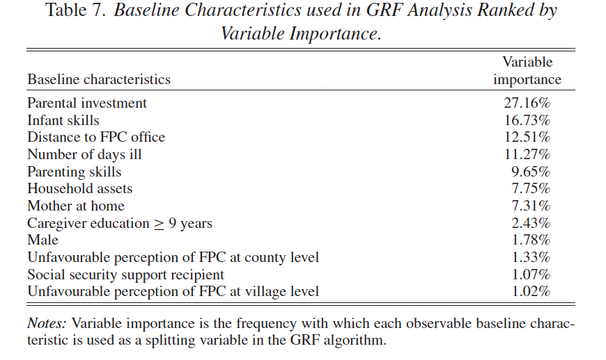

Lecture 4.2: Heterogeneous Treatment Effects
Learning Objectives
By the end of this session, you should be able to:
- Understand the concept of heterogeneous treatment effects and why they matter
- Distinguish between individual treatment effects, average treatment effects, and conditional average treatment effects
- Apply different approaches to analyze treatment effect heterogeneity
- Understand the strengths and limitations of pre-specified and data-driven approaches
- Interpret heterogeneity findings in published research
Individual Treatment Effects
Individual Treatment Effect (ITE): \(T_i = Y_i(1) - Y_i(0)\)
- The individual-specific causal effect of the treatment
- \(Y_i(1)\) is the potential outcome under treatment
- \(Y_i(0)\) is the potential outcome under control
Fundamental Problem of Causal Inference:
- We only observe one potential outcome per individual
- It’s impossible to directly observe individual treatment effects
- This makes identifying individual effects infeasible in between-subjects designs
Average Treatment Effect (ATE)
Given the fundamental problem, we focus on the Average Treatment Effect:
\[
\tau = E[Y_i(1) - Y_i(0)]
\]
- ATE answers: “What is the expected change in outcome if we randomly select a unit from the population and apply the treatment?”
- ATE is estimable through randomization
- Limitation: Assuming equal effect for all subjects is often unrealistic
- Interest in how treatment effects vary with subject characteristics
Examples of Interest in Heterogeneity
Real-world examples where heterogeneity matters:
- Preventive screening effectiveness: How the benefits of cancer screenings or other preventive services vary by age, risk status, and other patient characteristics
- Telehealth disparities: How rural and urban populations may experience different benefits from telehealth interventions (particularly relevant given the expansion of telehealth)
- Care coordination effectiveness: How complex patients with multiple comorbidities might benefit differently from care coordination programs
- Adherence interventions: How socioeconomic factors might moderate the effectiveness of programs to improve medication adherence
- Value-based payment impacts: How provider characteristics influence responses to payment reform
Reasons for Interest in Heterogeneity
- Targeting Treatment
- Should we direct interventions to certain types of people?
- Can help maximize impact with limited resources
- Ethical considerations in allocation
- Understanding Mechanisms
- Why did treatment work or not work?
- Helps refine interventions and theory
- External Validity
- Will effects generalize to new populations?
- Crucial for policy scale-up decisions
Moderation Analysis
Moderation Analysis: Examines how treatment effects differ based on pre-determined covariates (moderators)
Types of moderation analysis:
- Descriptive: Do treatment effects differ based on pre-determined covariates?
- Causal: If we independently varied the moderator, would we see the same CATEs?
Interpretation:
- Focus not just on measuring heterogeneities, but understanding why they exist
- Descriptive heterogeneity doesn’t necessarily imply causal moderation
Conditional Average Treatment Effects (CATEs)
Definition: \[
\tau(x) = E[\tau(x) | X_i = x] = E[Y_i(1, x) - Y_i(0, x) | X_i = x]
\]
- Average treatment effect for a subgroup with characteristics \(X_i = x\)
- Potential interest in changes in CATEs: \[
\Delta\tau(X_i) = E[Y_i(1,1) - Y_i(1,0) - Y_i(0,1) - Y_i(0,0)]
\]
Limitation:
- This object is not directly observed in data
- Each unit only provides a single potential outcome
- Each unit has only a single level of \(X_i\)
Differences in CATEs
We can measure differences between \(\tau(x)\) for different levels of \(X_i\):
\[
\Delta\hat\tau(X_i) = \tau(1) - \tau(0) = E[\tau_i(1) | X_i = 1] - E[\tau_i(0) | X_i = 0]
\]
Important Note:
- \(\Delta\hat\tau(X_i)\) is descriptive, not causal
- It can show whether CATE is higher for different levels of \(X_i\)
- Cannot answer whether there is a causal effect of \(X\) on the treatment effect
- But still highly valuable for policy and implementation
Example
Home-based Parenting Intervention in Rural China (Sylvia et al. 2021)
Background:
- Randomized experiment evaluating home-based parenting program delivered by family planning cadres in rural China
- Program significantly increased infant skill development after six months
- Beyond ATE, wanted to understand heterogeneous effects
Reasons for examining heterogeneity:
- Targeting: Identify which children benefited most
- Generalization: Understand how effects might vary in other populations
- Mechanisms: Gain insights into how the program worked
Approach 1: Pre-specified Hypotheses
Simple case: A small set of distinct subgroups that we hypothesize to summarize heterogeneity
With sufficient sample sizes per subgroup, treat each subgroup as a “mini-RCT”:
- Estimate \(\hat\tau(X) = E[\tau(X) | X_i = X]\)
- Hold \(X\) fixed in estimation
- Can be done separately or using interaction terms in regression
Example: Analyzing treatment effects by baseline parental investment levels
Challenges with Pre-specified Approaches
- Moderation analysis typically involves estimating a series of CATEs
- With many covariates, quickly becomes infeasible
- Particularly with smaller samples
- Continuous covariates require functional form assumptions
- Difficult to discover/justify interactions of multiple variables ex post
Partial solutions:
- Pre-analysis plans
- Data-driven approaches to predict heterogeneity
Approach 2: ML - Causal Forests
Causal forests adapt random forest methods to estimate heterogeneous treatment effects:
- Trees are trained on subsets of data and features
- Goal is to partition data to maximize between-group heterogeneity while maintaining within-group homogeneity
- Repeated many times with random splits of the data
- ITE estimated by averaging over subgroup effects across iterations
Advantages:
- Can handle high-dimensional covariates
- Doesn’t require functional form assumptions
- Can discover unexpected patterns of heterogeneity
Case Study: Heterogeneity in China’s Parenting Intervention
Sylvia et al. (2021) study:
- Evaluated home-based parenting program delivered by family planning cadres in rural China
- Used Generalized Random Forest (GRF) method to identify sources of heterogeneity
- Two-stage approach:
- Used GRF to identify important predictors of heterogeneity
- Used these insights for traditional subgroup analysis
GRF Findings: Variable Importance
Key predictors of heterogeneity: 1. Baseline parental investment (27.16%) 2. Baseline infant skills (16.73%) 3. Distance to FPC office (12.51%)
Key Takeaways
- Heterogeneity analysis provides crucial insights beyond average effects
- Two main approaches:
- Pre-specified subgroup analysis (theory-driven)
- Data-driven methods like causal forests (exploratory)
- Best practice: Use both approaches complementarily
- Results can guide:
- Program targeting
- Mechanism understanding
- External validity assessments
Using Heterogeneity Insights
- Program design: Target children with greatest potential benefit
- Resource allocation: Direct resources where most effective
- Implementation science: Understand contextual factors affecting success
- Theory development: Refine understanding of causal mechanisms
- Scale-up decisions: Predict effectiveness in new populations
References
Sylvia, S., Warrinnier, N., Luo, R., Yue, A., Attanasio, O., Medina, A., & Rozelle, S. (2021). From quantity to quality: Delivering a home-based parenting intervention through China’s family planning cadres. The Economic Journal, 131(635), 1365-1400.
Athey, S., Tibshirani, J., & Wager, S. (2019). Generalized random forests. The Annals of Statistics, 47(2), 1148-1178.
Wager, S., & Athey, S. (2018). Estimation and inference of heterogeneous treatment effects using random forests. Journal of the American Statistical Association, 113(523), 1228-1242.